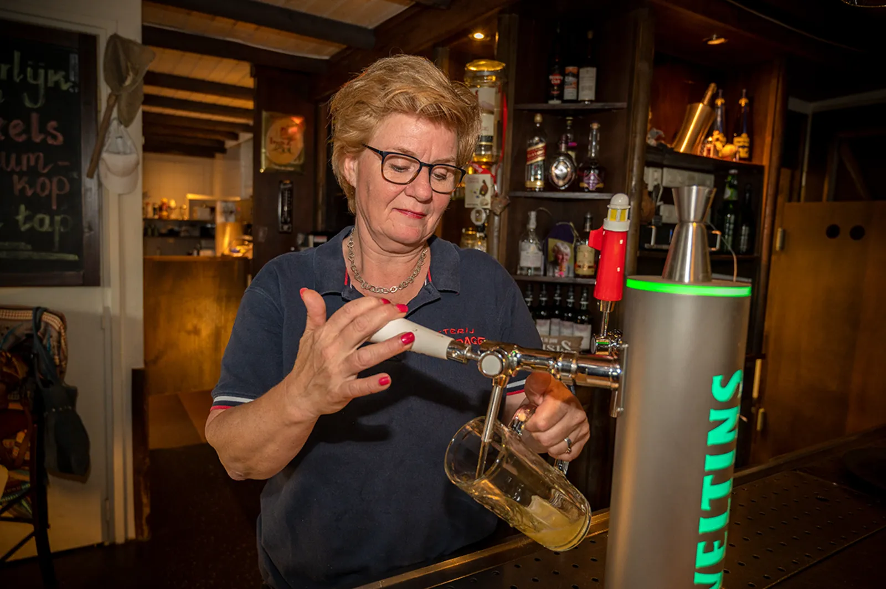
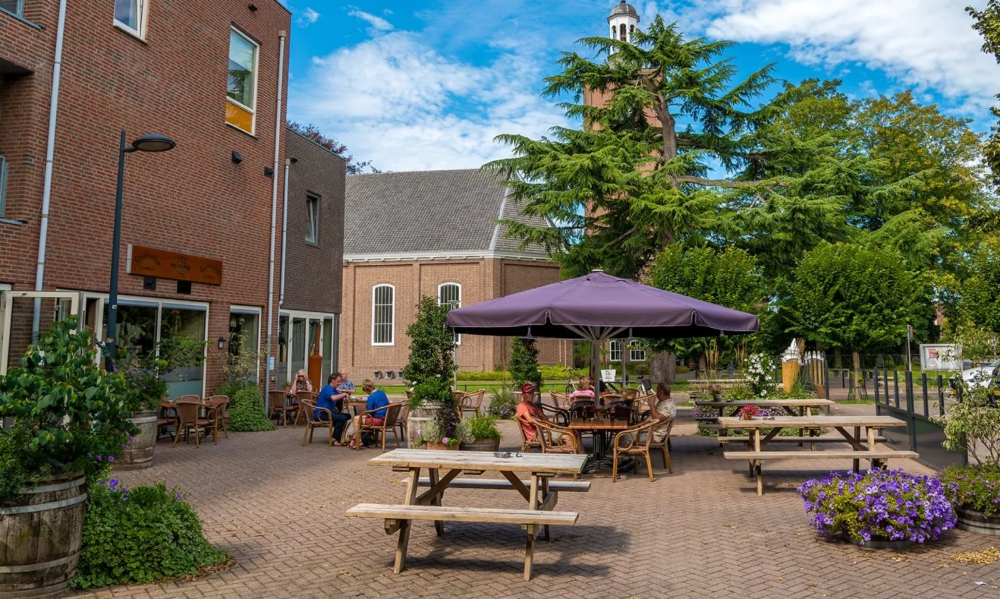
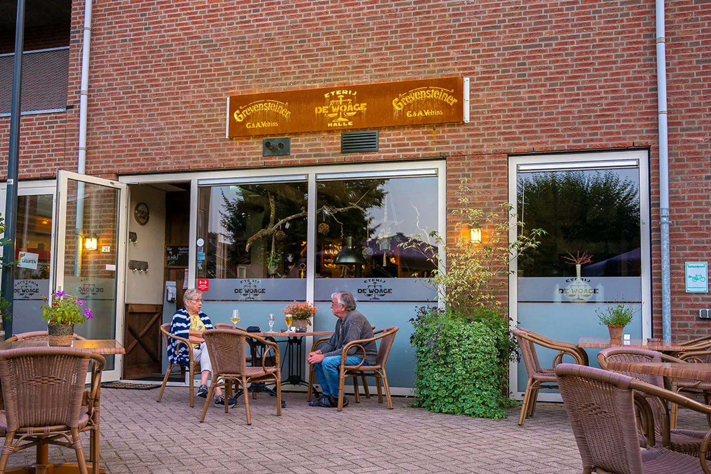
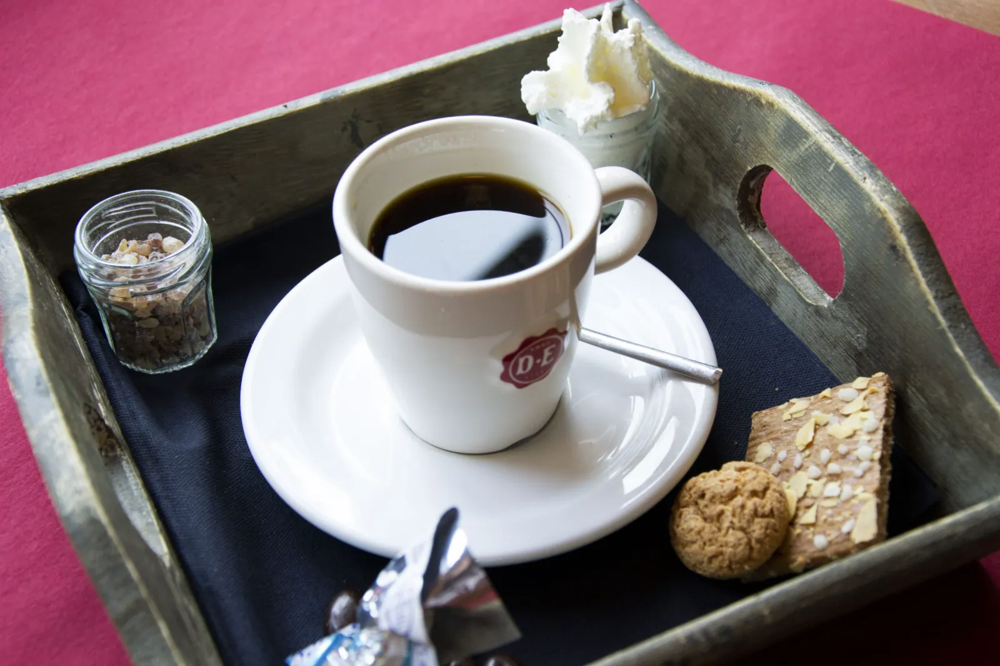
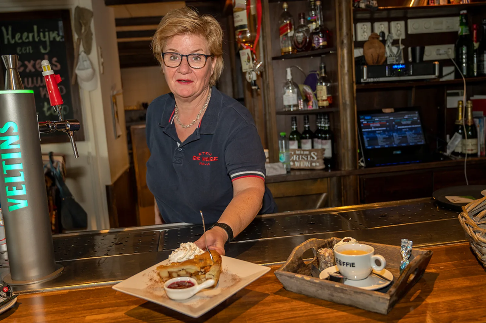
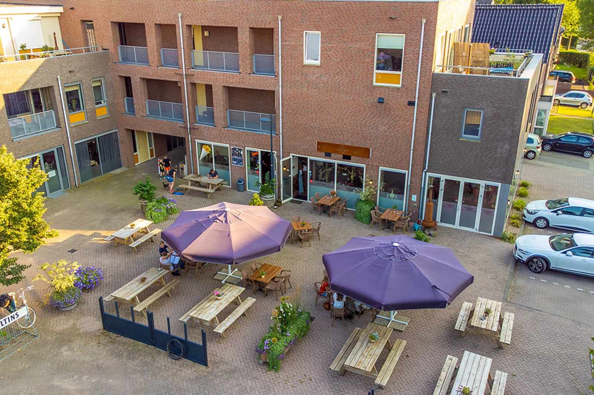
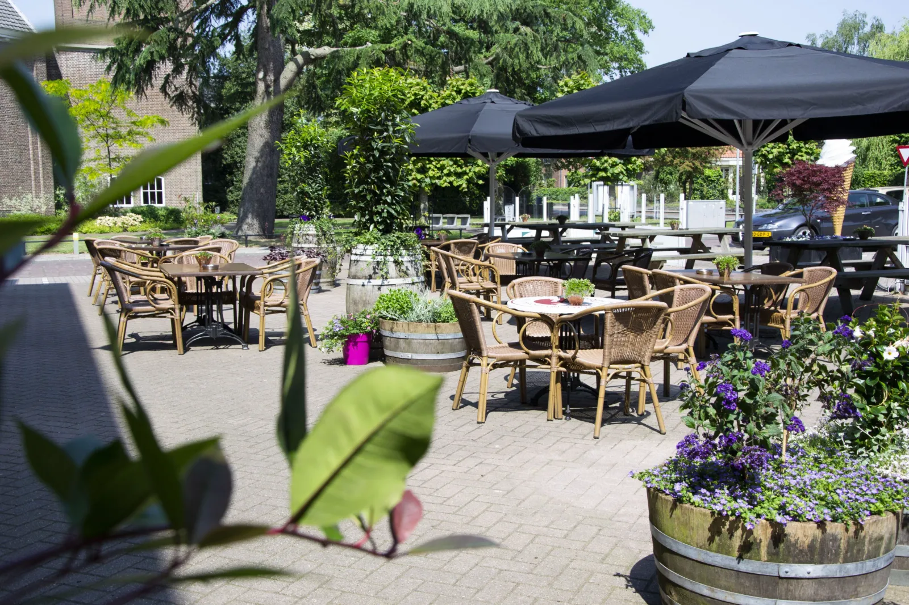

Cafetaria
Voor een lekkere snack of patat. Hier opeten of afhalen, en u kunt ook telefonisch bestellen.

Dorpsstraat 21, Halle
Cafetaria, eetcafé en terras. Een snelle snack, een smaakvol plate-menu of koffie met appeltaart in de zon.
Woensdag t/m zondag 12.00 – 20.30
“Een gastvrije ontvangst en gewoon lekker eten en drinken. Zo simpel kan het zijn...”
Van woensdag tot en met zondag kunt u bij ons terecht in de cafetaria voor de gangbare snacks. In ons eetcafé serveren wij u graag een smaakvolle plateservice. En bij mooi weer eet u lekker buiten op ons terras.

Voor een lekkere snack of patat. Hier opeten of afhalen, en u kunt ook telefonisch bestellen.

Neem de tijd voor een smakelijk en betaalbaar plate-menu, of een verfrissing aan de bar.

Een verfrissing, een kop koffie met appeltaart of een overheerlijke ijscoupe in de zon.
Snacks uit de cafetaria en onze plate-menu's. Hier opeten of afhalen? Eet smakelijk!
* met frisse salade, patat en saus
Alle plate-menu's met frisse salade, patat en saus.
Telefonisch bestellen: 0314 631 097

De naam is al jarenlang een begrip in Halle. Waar vroeger een discotheek stond, vindt u nu Eeterij de Woage: een snackbar en eetcafé.
Ik ben Herdien Beekman, uw gastvrouw. Samen met mijn medewerkers zorg ik ervoor dat het u aan niets tekortkomt. Even een snelle hap in de cafetaria, of neemt u liever de tijd voor een lekker menu in ons eetcafé? We staan voor kwaliteit en smaak, en gaan voor absolute klanttevredenheid.
Kom gerust eens binnen!
Groet, Herdien
“Gastvrijheid, genieten van eten en drinken en een goede service”


Wilt u komen eten in ons eetcafé? We vinden het fijn als u telefonisch reserveert. We zijn bereikbaar tijdens openingstijden.
Bel 0314 631 097We hebben voor elke gelegenheid een leuke cadeaubon. Een bedrag naar keuze, te besteden aan een diner voor twee of een ijsje op het terras. Altijd iets lekkers om weg te geven!
Lijkt het je leuk om ons team te komen versterken? Neem dan zeker contact met ons op.
Mail onsHeeft u vragen? We nemen graag de tijd voor u. Mail ons, we reageren zo snel mogelijk, of bel tijdens openingstijden.
Eeterij de WoageVolg ons ook op Facebook.